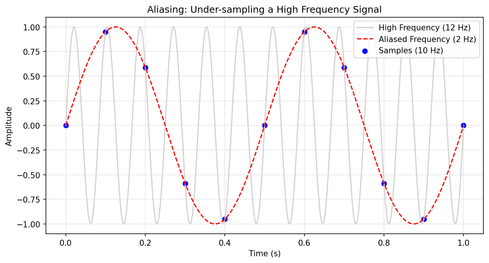
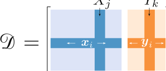
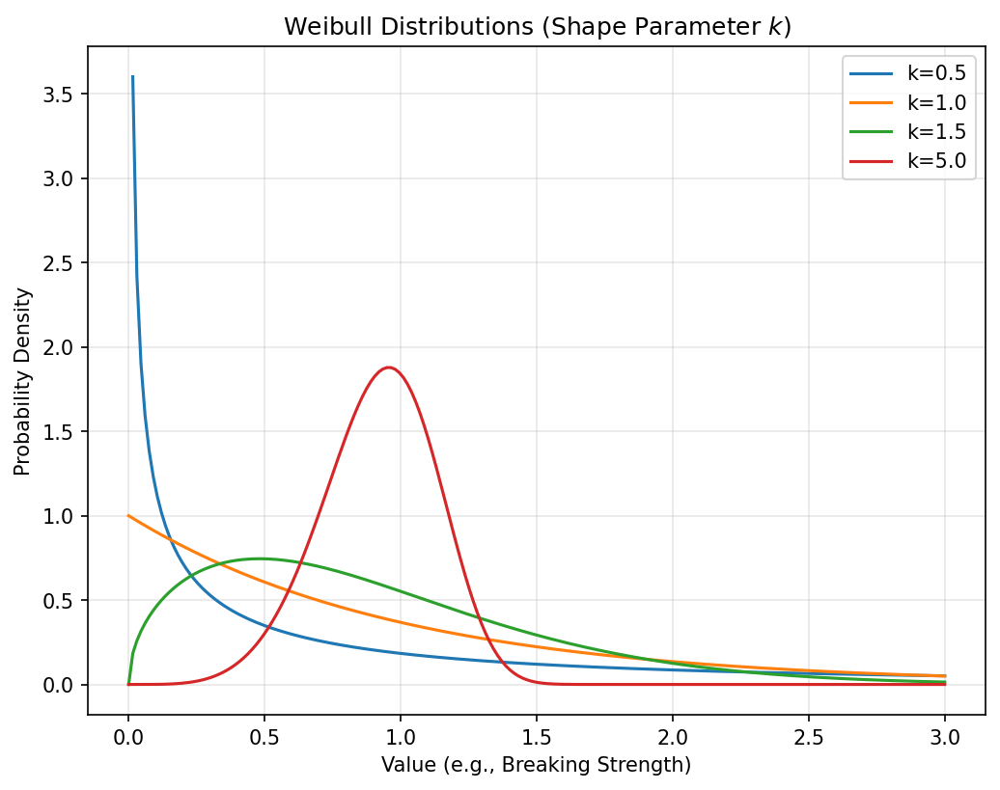
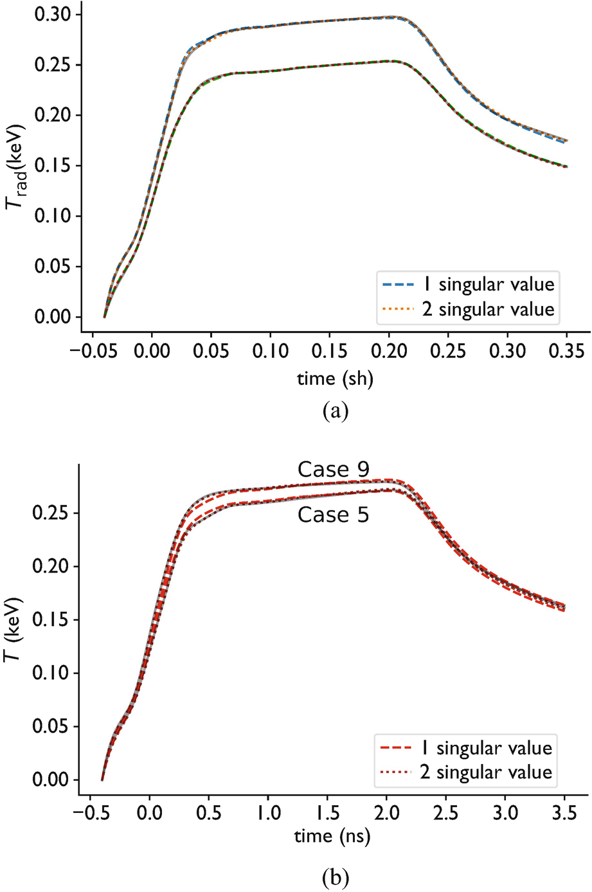
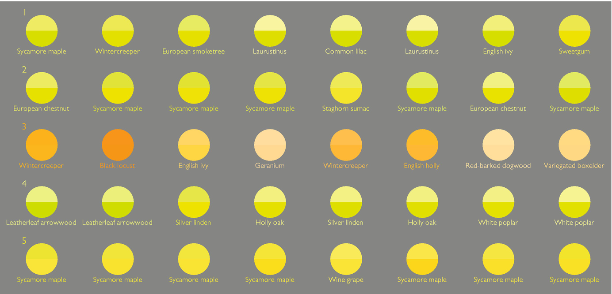
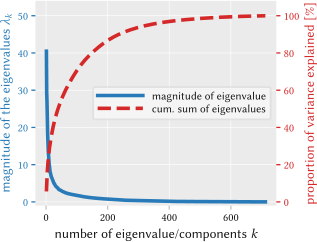

graph LR
D["Data Cloud<br>(high-dim)"] --> C["Covariance Matrix<br>C = X'X/N"]
C --> EV["Eigenvectors<br>(directions)"]
C --> EL["Eigenvalues<br>(variances)"]Machine Learning in Materials Processing & Characterization
Unit 2: Physics of Data Formation
Prof. Dr. Philipp Pelz
FAU Erlangen-Nürnberg


01. Welcome to Unit 2
From Physical Sensing to Mathematical Representation
Today’s Learning Journey:
- How physical measurements become digital arrays
- The measurement chain: sampling, resolution, noise
- Mathematical representation of data
- Uncertainty types: aleatory vs. epistemic
- Dimensionality reduction: SVD and PCA
- Clustering and visualization
02. Learning Outcomes
By the end of this unit, you can:
- Describe the measurement chain from physical state to digital value
- Apply the Nyquist-Shannon theorem to assess sampling adequacy
- Distinguish aleatory from epistemic uncertainty
- Perform PCA/SVD for dimensionality reduction
- Interpret scree plots and choose the number of components
- Use K-means and t-SNE for clustering and visualization
Part 1: Signal & Image Formation
Slides 03–12
03. From Atoms to Bits
- How do we get from a physical sample to a digital array?
- The Measurement Chain: physical phenomenon → sensor → digitization → data
- Signals are not “truth” — they are filtered, discretized, and noisy representations of reality
Note
Understanding the measurement chain is a prerequisite for choosing the right ML model.
04. The Measurement as a Mapping
- A measurement is a function \(M: \mathcal{P} \rightarrow \mathcal{D}\) mapping physical states to data
- Convolution: The signal is often the true state convolved with the instrument’s Point Spread Function (PSF)
\[I(\mathbf{r}) = [O * \text{PSF}](\mathbf{r}) + \eta\]
- \(O\): the true object
- PSF: instrument response
- \(\eta\): noise
ML Task: Can we “deconvolve” the instrument effects to recover \(O\)?
05. Sensors as Transducers
- Sensors convert physical stimuli into electrical/digital signals:
- Photon intensity → pixel value (CCD/CMOS)
- Electron scattering → diffraction pattern (TEM detector)
- Temperature → voltage (thermocouple)
The mapping \(f: \text{Physical State} \to \text{Digital Representation}\) is always lossy.
06. Continuous to Discrete: The Sampling Process
- Physical signals are continuous; data is discrete
- Sampling: measuring at discrete points \(\tau_i\)
- Neuer’s sampling formula (Neuer et al. 2024):
\[x_i = \xi(\tau_i + \delta t) + u_x\]
- \(\xi\): underlying physical truth
- \(\delta t\): timing jitter/uncertainty
- \(u_x\): amplitude noise
07. Temporal and Spatial Sampling
- Sampling Rate \(\nu_S = 1/\Delta t\)
- In characterization, sampling happens in multiple domains:
- Spatial: Pixel pitch in microscopy
- Temporal: Frame rate in in-situ experiments
- Spectral: Energy resolution in EELS/EDS
Question: How fast / fine do we need to sample?
08. The Nyquist-Shannon Theorem
To fully capture a signal with maximum frequency \(\nu_{\max}\), we must sample at least twice as fast:
\[\nu_S \geq 2\nu_{\max}\]
- Nyquist Frequency: \(\nu_{\text{Nyquist}} = \frac{1}{2}\nu_S\)
- Frequencies above \(\nu_{\text{Nyquist}}\) cannot be faithfully represented
- This is a hard physical limit, not a guideline
Note
Pixel size is what you choose; resolution is what the physics allows.
09. Aliasing: When Resolution Fails
- If \(\nu_S < 2\nu_{\max}\), high-frequency components are “folded” into lower frequencies
- The signal appears to contain features that don’t physically exist
- Example: Moiré patterns in TEM when grid resolution and crystal lattice interfere

ML Impact: Your model might learn aliasing artifacts instead of real physical features!
10. Physical Resolution Limits
- Optical/Electron diffraction limits the finest resolvable feature
- Point Spread Function (PSF): The response of an imaging system to a point source
- A sharp point becomes a blurred disk — the PSF encodes this blurring
- Blurring is a physical prior for convolutional models
- Knowing the PSF allows deconvolution (inverse problems, Unit 9)
11. Jitter and Finite Rate of Innovation
Jitter (\(\delta t\)):
- Timing uncertainty in our sampling clock
- Leads to phase noise in transient measurements
- Example: pump-probe experiments in ultrafast microscopy
Finite Rate of Innovation (FRI):
- If we have prior knowledge of signal structure (e.g., sum of \(K\) pulses)
- We can sample below Nyquist!
- “Sparsity” in the physical process enables compressed sensing
12. Part 1 Recap
- Measurements are mappings from physical states to data — always lossy
- The Nyquist theorem sets a hard limit on sampling adequacy
- Aliasing creates phantom features — check your sampling rate
- The PSF encodes instrument physics — use it as a prior for ML
- Prior knowledge about signal structure can relax sampling requirements
Part 2: Mathematical Representation of Data
Slides 13–22
13. Notation Standards
Following Sandfeld (2024) conventions (Sandfeld et al. 2024):
- Scalars: Italic Latin/Greek — \(a\), \(\lambda\)
- Vectors: Lowercase bold — \(\mathbf{x}\)
- Matrices: Uppercase bold — \(\mathbf{X}\)
- Indices: Python starts at 0; mathematics often starts at 1
14. The Data Point \(P\)
A single observation is a compound:
\[P = (\mathbf{x}, \mathbf{y})\]
- \(\mathbf{x} \in \mathbb{R}^n\): Input variables (features)
- \(\mathbf{y} \in \mathbb{R}^k\): Output variables (targets)
Example: One tensile test sample
- \(\mathbf{x}\): composition (C, Mn, Si, …), processing (temperature, time)
- \(\mathbf{y}\): yield strength, elongation at break
15. The Feature Matrix \(\mathbf{X}\) (Design Matrix)
- \(m\) rows: Observations (samples, instances)
- \(n\) columns: Features (variables, attributes)
- Element \(x_{i,j}\): the \(j\)-th feature of the \(i\)-th observation
\[\mathbf{X} = \begin{pmatrix} x_{1,1} & x_{1,2} & \cdots & x_{1,n} \\ x_{2,1} & x_{2,2} & \cdots & x_{2,n} \\ \vdots & & \ddots & \vdots \\ x_{m,1} & x_{m,2} & \cdots & x_{m,n} \end{pmatrix}\]
16. Tabular Data in Practice

- Features are column vectors \(\mathbf{X}_j\) (one measurement type across all samples)
- Observations are row vectors \(\mathbf{x}_i\) (all measurements for one sample)
- The target matrix \(\mathbf{Y}\) has the same number of rows as \(\mathbf{X}\)
17. Python Implementation
18. Think About This: Feature Design
Question: You have SEM images (1024×1024 pixels) of 50 microstructures. How do you create a feature matrix \(\mathbf{X}\)?
- Each pixel is a feature → \(\mathbf{X}\) is \(50 \times 1{,}048{,}576\)
- Extract grain size, porosity, phase fraction → \(\mathbf{X}\) is \(50 \times 3\)
- Use a CNN to learn features automatically
Answer: All three are valid! (A) is high-dimensional and sparse. (B) uses domain knowledge. (C) learns features end-to-end. The right choice depends on data size and task.
19. Expected Value and Mean
\[\mu = E(x) = \sum_i x_i \, p(x_i)\]
- The expected value weights outcomes by their probability
- With uniform sampling: \(\mu = \frac{1}{N}\sum_{i=1}^N x_i\) (arithmetic mean)
The mean is the simplest summary statistic — but it can be misleading for skewed or multi-modal distributions.
20. Variance: The Spread of Data
\[\sigma^2 = \text{Var}(\mathbf{x}) = \frac{1}{N}\sum_{i=1}^N (x_i - \mu)^2\]
- Measures fluctuation around the mean
- In ML: We want to distinguish “physical variance” (information) from “noise variance” (nuisance)
High variance in your target variable is good — it means there’s something to learn. High variance in your predictions is bad — it means your model is unstable.
21. Higher Moments: Skewness & Kurtosis
Skewness — Asymmetry:
- \(\gamma_1 = 0\): symmetric (Gaussian)
- \(\gamma_1 > 0\): right-skewed (long right tail)
- \(\gamma_1 < 0\): left-skewed
Kurtosis — Tail weight:
- \(\kappa = 3\): Gaussian reference
- \(\kappa > 3\): heavy tails (leptokurtic)
- \(\kappa < 3\): light tails (platykurtic)
Materials relevance: Failure statistics (Weibull) are often heavily skewed. Ignoring skewness leads to wrong confidence intervals.
22. Covariance and Correlation
Covariance Matrix \(\mathbf{C}\): How features change together
\[\text{Cov}(X, Y) = E[(X - \mu_X)(Y - \mu_Y)]\]
Correlation Coefficient: Normalized to \([-1, 1]\)
\[r_{XY} = \frac{\text{Cov}(X,Y)}{\sigma_X \sigma_Y}\]
Materials Example: Do high cooling rates always correlate with smaller grains? Plot it and check!
Part 3: Uncertainty & Stochasticity
Slides 23–30
23. Every Measurement is a Random Variable
- Data is a Stochastic Process (Neuer et al. 2024)
- Every measurement is one realization of a random variable
- Repeat the experiment → you get a different number each time
Laplace Probability: \(P(A) = \frac{\text{favorable outcomes}}{\text{possible outcomes}}\)
In the lab, we repeat measurements to “see” the underlying distribution.
24. Aleatory Uncertainty (Statistical)
- Inherent randomness (Latin alea = dice)
- Examples:
- Shot noise: discrete photon/electron counting
- Thermal fluctuations: Johnson-Nyquist noise
- Radioactive decay: counting statistics
Key property: Cannot be reduced by collecting more data or using a better model. It is a fundamental property of the physical system.
25. Epistemic Uncertainty (Systematic/Model)
- Uncertainty from “lack of knowledge”
- Examples:
- Small dataset: not enough samples to learn the true relationship
- Model bias: wrong functional form
- Limited precision: instrument calibration errors
Key property: Can be reduced by better models, more data, or improved instruments.
Note
Distinguishing aleatory from epistemic uncertainty tells you whether to collect more data (epistemic) or accept the noise floor (aleatory).
26. Physical Noise Model: Gaussian
\[p(x) = \frac{1}{\sqrt{2\pi\sigma^2}} \exp\left(-\frac{(x-\mu)^2}{2\sigma^2}\right)\]
- Universal model for the sum of many random disturbances (Central Limit Theorem)
- Thermal noise in electronics, background noise in spectroscopy
Why it matters for ML: Many loss functions (MSE) implicitly assume Gaussian noise. If your noise is not Gaussian, MSE is the wrong loss!
27. Physical Noise Model: Poisson
\[p(x) = \frac{\lambda^x}{x!} e^{-\lambda}\]
- Counting statistics for rare, discrete events
- Mean = Variance = \(\lambda\)
- Example: electron counts in TEM, photon counts in X-ray spectroscopy
Key insight: At low counts (\(\lambda < 20\)), Poisson looks nothing like Gaussian. Using MSE loss on Poisson data is wrong — use Poisson negative log-likelihood instead.
28. Physical Noise Model: Weibull
- Models failure and defect statistics in materials
- Heavily skewed — captures “early failures” and “wear-out”
- Parameters: shape \(k\) (controls skewness) and scale \(\lambda\) (characteristic life)

Used in: fatigue life prediction, ceramic strength statistics, reliability engineering.
29. Bayes’ Theorem in Characterization
\[P(\text{State} | \text{Data}) = \frac{P(\text{Data} | \text{State}) \cdot P(\text{State})}{P(\text{Data})}\]
- Prior \(P(\text{State})\): What physics tells us before measurement
- Likelihood \(P(\text{Data} | \text{State})\): The noise model (Gaussian, Poisson, …)
- Posterior \(P(\text{State} | \text{Data})\): Updated belief after measurement
Physics provides the prior. The measurement provides the likelihood. Bayes combines them optimally.
30. Part 3 Recap
- Every measurement is a realization of a random variable
- Aleatory uncertainty is irreducible; epistemic is reducible
- Gaussian noise → MSE loss. Poisson noise → Poisson loss
- Weibull captures failure statistics (not bell-shaped!)
- Bayes’ theorem is the formal way to combine physics and data
Part 4: Dimensionality Reduction
Slides 31–45
31. The Curse of Dimensionality
- Experimental data is high-dimensional:
- 1D Spectrum: 2048 channels
- 2D Image: \(1024 \times 1024 \approx 10^6\) dimensions
- 4D-STEM dataset: \(10^8\) values per scan
- Most of this space is empty
- Materials data usually lies on a low-dimensional manifold
- Finding this manifold is the key to making ML work
32. The Covariance Matrix as a Geometric Object
\[\mathbf{C} = \frac{1}{N}\mathbf{X}^T\mathbf{X}\]
- A \(n \times n\) matrix encoding feature relationships
- The eigenvectors of \(\mathbf{C}\) are the principal axes of the data cloud
- The eigenvalues give the variance along each axis
33. Singular Value Decomposition (SVD)
The “engine” of linear algebra:
\[\mathbf{X} = \mathbf{U} \mathbf{S} \mathbf{V}^T\]
- \(\mathbf{U}\): Left singular vectors — patterns across samples (\(m \times m\))
- \(\mathbf{S}\): Singular values — importance of each pattern (diagonal)
- \(\mathbf{V}^T\): Right singular vectors — patterns across features (\(n \times n\))
34. Rank and Structure
- Rank of a matrix = number of non-zero singular values
- Reveals the number of truly independent variables
- A rank-3 dataset of 1000 features has only 3 degrees of freedom!
Materials insight: If your 2048-channel spectrum has rank ~5, only 5 independent spectral components are present. The rest is noise or linear combinations.
35. Principal Component Analysis (PCA)
Finding the coordinate system that maximizes captured variance:
- Mean centering: \(\bar{\mathbf{X}} = \mathbf{X} - \boldsymbol{\mu}\)
- SVD: \(\bar{\mathbf{X}} = \mathbf{U}\mathbf{S}\mathbf{V}^T\)
- Project: \(\mathbf{Z} = \bar{\mathbf{X}}\mathbf{V}_k\) (keep top \(k\) components)
PCA components are orthogonal — each captures information not in the others.
36. SVD vs. PCA: What’s the Difference?
- SVD is the numerical algorithm: works on any matrix
- PCA is the statistical concept: SVD applied to centered data
- Connection: PCA eigenvalues = (singular values)² / (N-1)
In practice: just use sklearn.decomposition.PCA or np.linalg.svd — both work.
37. Maximizing Variance: Why?
- Spreading data out along principal axes preserves the most information
- First PC: direction of greatest variability
- Second PC: direction of greatest variability orthogonal to the first
- And so on…

38. The Scree Plot: How Many Components?
- Plot singular values (or squared singular values) in descending order
- The “Elbow”: where signal ends and noise begins
- Fraction of variance explained: \(m_\ell = \frac{\sum_{n=1}^{\ell} s_n^2}{\sum_{n=1}^{N} s_n^2}\)
Rule of thumb: Keep enough components to explain 90-95% of variance. But always check what the components mean physically!
39. Interpreting PCA Components in Materials
PCA components often correspond to physical modes:
- Component 1: Overall intensity (thickness/density variation)
- Component 2: Primary chemical shift or grain rotation
- Component 3: Secondary phase appearance
Warning: PCA components are mathematical, not physical. They may mix multiple physical effects. Interpret with caution.
40. Case Study 1: Time Series Reduction
McClarren’s Hohlraum Example (McClarren 2021):
- 30 time-point laser pulse profiles → 2 principal components
- PC1 = overall scale (pulse height)
- PC2 = plateau timing (when the pulse peaks)
- Captures 83% of variance with only 2 variables!

41. Case Study 2: Hyperspectral Imaging
McClarren’s Foliage Example (McClarren 2021):
- 2051 wavelengths per pixel → 4 principal components
- Identifying distressed vs. healthy vegetation
- PCA uncovers spectral structure that visible light alone misses

42. PCA on Images: Eigen-Microstructures
- Flatten 2D images into 1D vectors
- Stack into a matrix: each row is one image
- Apply PCA → “Eigenfaces” / “Eigenmicrostructures”
- Most images are “rare” in high-dimensional space
- They occupy a small manifold defined by physics
- PCA finds the linear approximation of this manifold
Limitation: PCA is linear. It cannot handle rotations, deformations, or complex nonlinear structures efficiently.
43. PCA for Noise Removal
Reconstruct using only the top \(k\) components:
\[\mathbf{X}_{\text{clean}} \approx \mathbf{U}_k \mathbf{S}_k \mathbf{V}_k^T\]
- Discards small singular values → removes noise
- Physical peaks are preserved; random noise is suppressed
Danger: Rare but real physical events (e.g., a single defect) may have small singular values and get discarded!
44. Standardizing Data Before PCA
- PCA is sensitive to the scale of features
- Feature A in [0, 1] vs. Feature B in [0, 1000] → PCA dominated by B
- Always center (subtract mean) and optionally standardize (divide by std)
45. Part 4 Recap
- High-dimensional data lives on a low-dimensional manifold
- SVD factorizes data into patterns and their importance
- PCA = SVD on centered data → maximizes preserved variance
- Scree plots tell you how many components to keep
- PCA components may (or may not) correspond to physical modes
- PCA is linear — nonlinear methods exist for complex structures
Part 5: Clustering & Visualization
Slides 46–50
46. K-Means Clustering
- Unsupervised: Find \(K\) natural groupings in the data
- Minimize the within-cluster sum of squares:
\[L = \sum_{k=1}^{K} \sum_{\mathbf{x}_i \in C_k} \|\mathbf{x}_i - \boldsymbol{\mu}_k\|^2\]
- Initialize \(K\) centroids → Assign points → Update centroids → Repeat
- Simple, fast, but requires choosing \(K\) in advance
47. Choosing \(K\): The Elbow Method
- Plot loss \(L\) vs. number of clusters \(K\)
- The elbow: where adding more clusters yields diminishing returns
- Similar concept to the PCA scree plot

Materials example: K-means on EDS spectra → automatically identifying phases without manual labeling.
48. t-SNE: Visualizing High-Dimensional Data
t-Distributed Stochastic Neighbor Embedding:
- Maps high-dimensional data to 2D/3D for visualization
- Preserves local structure (neighbors stay neighbors)
- Does NOT preserve global distances
49. Why the “t”? Heavy Tails for Better Separation
- In high-dim: Use Gaussian (normal) for neighborhood probabilities
- In low-dim: Use Cauchy/t-distribution (heavy tails)
- Heavy tails “push” dissimilar clusters apart → better visual separation
Fashion MNIST example (McClarren 2021):
- 28×28 pixel images of clothing → 784 dimensions
- t-SNE reveals clear “islands” of T-shirts, shoes, dresses, etc.
- Structure discovered purely from pixel values — no labels needed!
50. Unit 2 Summary & Next Steps
Key Takeaways:
- Signals are physical mappings → understand the PSF
- Noise has a distribution → use it as a prior for your loss function
- High dimensionality is a mask → use PCA/SVD to find the structure
- K-means and t-SNE reveal natural groupings without labels
Reading:
- McClarren (2021): Ch. 4 (PCA and Data Reduction) (McClarren 2021)
- Neuer (2024): Ch. 2 (Mathematical description of data) (Neuer et al. 2024)
- Sandfeld (2024): Ch. 5, 8, 15 (Sandfeld et al. 2024)
Next Week: Unit 3 — Data Quality and Leakage
References
McClarren, Ryan G. 2021. Machine Learning for Engineers: Using Data to Solve Problems for Physical Systems. Springer.
Neuer, Michael et al. 2024. Machine Learning for Engineers: Introduction to Physics-Informed, Explainable Learning Methods for AI in Engineering Applications. Springer Nature.
Sandfeld, Stefan et al. 2024. Materials Data Science. Springer.

© Philipp Pelz - Machine Learning in Materials Processing & Characterization